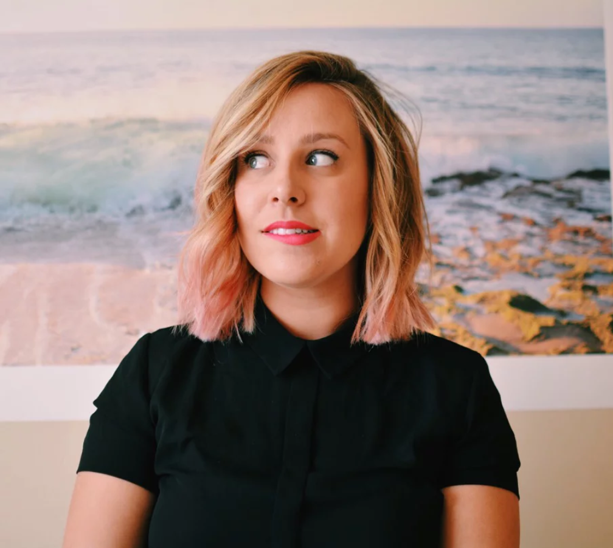

Hello,
it's me...
lauren steimle.
as a designer, i'm especially passionate about creating completely custom brands that tell a unique story. my expertise lie in full brand identities, website design & above all my one true love, print collateral.
as a person, i'm passionate about gender equality, mexican food, travel & golden retriever puppies. as a native of san diego & previous north shore resident, i'm happiest in warm climates by the coast. playing and listening to live music has always been my therapy & one day i hope to find myself at a florence & the machine concert. i try to keep myself together but you can usually find me laughing at things that aren't meant to funny.
currently causing ruckus in: washington, d.c.
Education
art – graphic design emphasis (magna cum laude)
brigham young university – hawaii / June 2016
3.84 GPA
art history & photography study abroad
brigham young university – study abroad / May-June 2015
Sharpened photography skills, gained inspiration for creativity and noted ideas for future designs.
Experience
senior graphic designer / stream realty partners
September 2016 to present
senior graphic designer for all marketing, advertising and design work from the stream realty washington, d.c. office plus assistance in national branding and campaigns.
photo & design intern / kate zaremba company
July 2016 to August 2016
intern to kate zaremba, textile designer and owner of company, in all design and business related tasks. updated and kept website and blog up to date, assisted with orders, photographed projects and helped with classes and workshops.
photo & design intern / verily magazine
February 2016 to May 2016
Intern taking 80 photos for Verily’s 3 social media accounts including facebook, twitter and instagram and designing moodboards and other online content.
writer & layout artist / ke’alakai
September 2013 to April 2015 and February 2016 to June 2016
Started out writing multiple articles for BYU-Hawaii’s weekly publication Ke’Alakai (The Leader) and transitioned into layout artist eight months after beginning.
freelance design / lauren steimle designs
April 2014 to present
Work with a variety of clients, assisting in various needs from branding and advertising to invitations.
video finalist / darling magazine’s video contest
November 2015
Crafted a travel video highlighting the Pacific Northwest and was a finalist in Darling Magazine’s instagram #DarlingExplorer contest.
- hello@laurensteimle.com
- washington, dc
© Lauren Steimle Designs